Introduction to the drawLA Toolbox
The drawLA Toolbox was created to facilitate visualization of some basic concepts of Linear Algebra. It is a collection of MATLAB functions for easy plotting of 2D/3D vectors, planes, lines and spheres, and... displaying matrix equations.
Contents
Optional requirements
arrow.m - draw a line with arrow head. Written by Erik Johnson.
Available at the MATLAB Central File Exchange: File ID # 278.
Required by drawAxes.m.Toolbox content
There are 12 functions in the toolbox.
10 of them produce 2D/3D plots of geometric objects:
1. drawVector - Draw 2D/3D vector(s). 2. drawPlane - Draw 2D/3D plane. 3. drawSpan - Draw line(2D)/plane(3D) spanned by one (2D/3D) or two (3D) vectors. 4. drawLine - Draw 2D/3D line between two points. 5. drawXLine - Draw vertical line in xy-plane at given x value. 6. drawYLine - Draw horizontal line in xy-plane at given y value. 7. drawCircle - Draw circle(s) in a xy-plane plot. 8. drawAxes - Draw 2D/3D coordinate axes lines. 9. drawSphere - Draw unit 2D/3D sphere under a linear (affine) transformation. 10. drawMesh - Plot a polygonal 2D/3D mesh.
The other two are auxiliary functions for:
11. dispMEq - Formatted display of a matrix equation. 12. drawGraph - Draw small directed graph with up to 6 nodes.
Each function is provided with a help and examples of its usage, which can be displayed by typing help function name in the command window. E.g., help drawPlane.
The several detailed examples below provide a fast overview of the toolbox functionality.
1. drawVector
Example in 2D: Let's draw a 2D vector a = [3 1]':
a = [3 1]'
figure(1); clf;
drawVector(a);
title('Plot a 2D vector with drawVector()')
a =
3
1
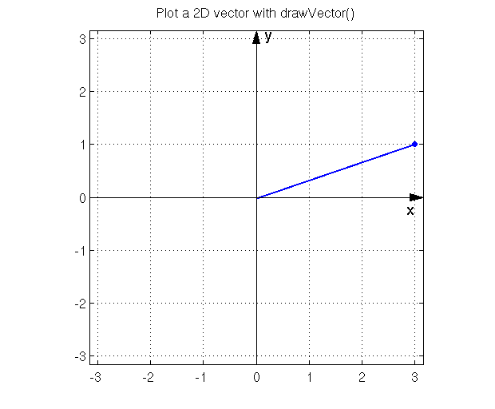 Note the coordinate axes. They are added automatically.
As you see, the default color of a vector is blue, the default marker type is a dot and the default line type is a line. You can easily change those parameters and plot a vector as a, say, single red square.
drawVector(a, 'rs'); title('Plot a vector as a point')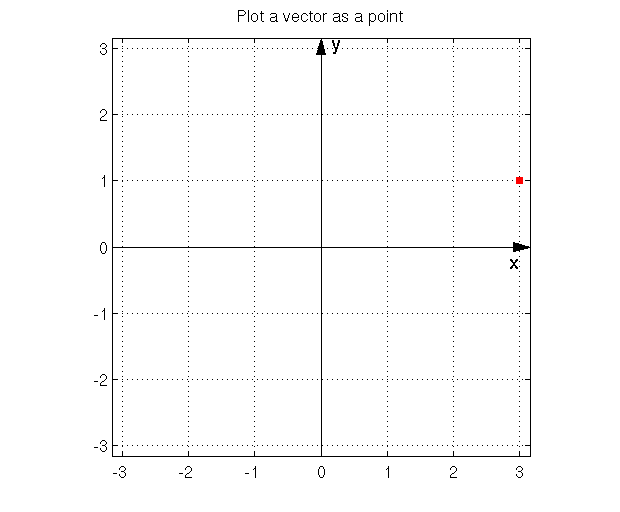
The following command adds a dotted line:
drawVector(a, 'rs-.'); title('Use different line style')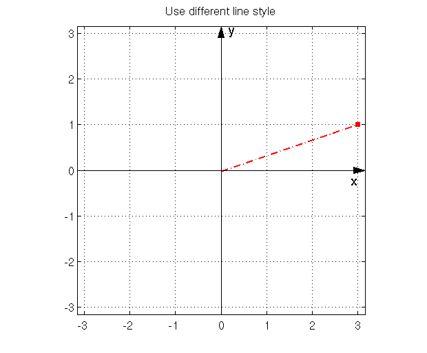
It is also possible to name the vector, specifying its label in the curly brackets, i.e., as a cell array:
drawVector(a, 'rs-', {'a'}); title('Draw a named vector')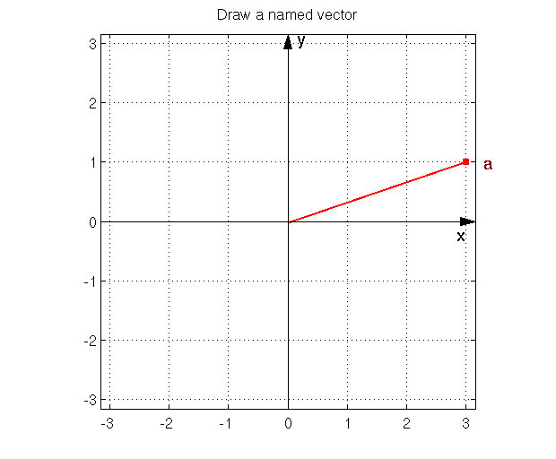
To draw a second vector, e.g., b = [-2 1]' one could use hold on:
b = [-2 1]'; hold on; drawVector(b, {'b'}); hold off; title('Draw two vectors: possibility 1')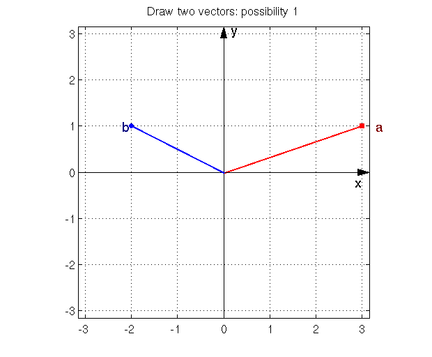
But there is a nicer way to do that in one line:
figure(1); clf; drawVector([a b], 'g->', {'a', 'b'}); title('Draw two vectors: possibility 2')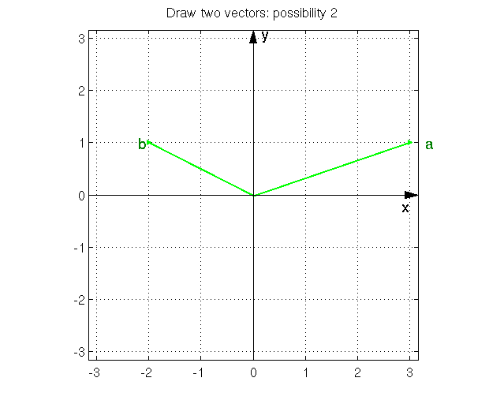
In a similar way, you can plot more vectors, just put them as columns into a matrix. E.g.:
A = [ 2 3 1 ;
4 1 1 ];
hV = drawVector(A, {'a', 'b', 'c'});
title('Draw several vectors at once')
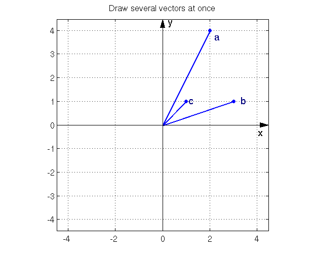 drawVector returns an optional output - a handles structure, hV. This structure has three fields hV.p, hV.l, and hV.t which contain the handles of the vector points (markers), lines and labels (text), respectively.
The handles may be used to change the plot appearance afterwards. E.g., the following command change the line style of the first vector from the last example.
set(hV.l(1), 'LineStyle', '-.'); title('Postprocessing of vector properties')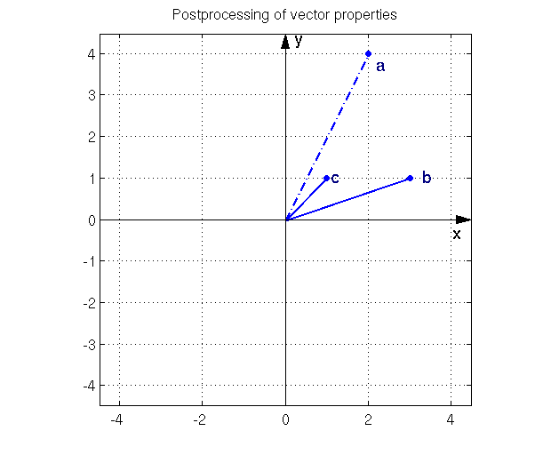
Example in 3D: You can draw 3D vectors in the completely similar way. Let's draw two random 3D vectors: A = rand(3, 2)*2 - 1;
A = rand(3, 2)*2 - 1;
figure(1); clf;
drawVector(A, {'a', 'b'});
view(60,10)
title('Plot 3D vectors with drawVector()')
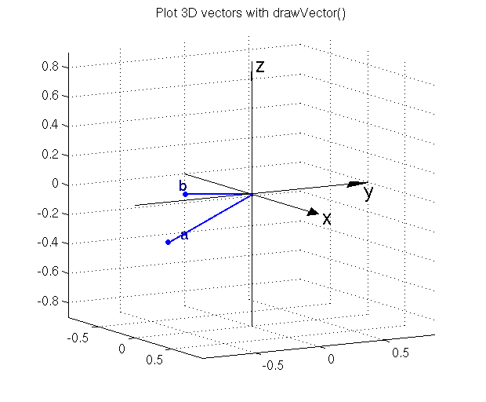 Again the axes are added automatically. If you would like to have different axes labels pass them as a cell array with the optional parameter, 'AxesLabels':
A = [ 1 1;
2 -2
3 3 ];
figure(1); clf;
drawVector(A, {'a', 'b'}, 'AxesLabels', {'\alpha','\beta','\gamma'});
view(60,10)
title('Example of different axes labeling')
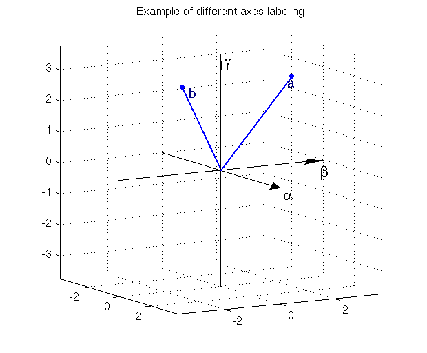 2. drawPlane
A plane is defined by a normal vector, n, that determines the plane's orientation and a scalar, d, that specifies the magnitude of a shift of the plane from the origin in the direction of n. For the given n and d, all the points (i.e., vectors x), satisfying the following equations belong to the plane:
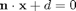
With the function drawPlane(), you can easily visualize planes in 2 and 3 dimensions. Let's begin with a 3D case.
3D example:
n = [1 2 3]'; figure(1); clf; hold on; drawVector(n, {'n'}); % the normal drawPlane(n); % unshifted plane, comes through the origin drawPlane(n, 5, 'r'); % the plane shifted by "5" view(60,15) hold off; title('Plot 3D planes with drawPlane()')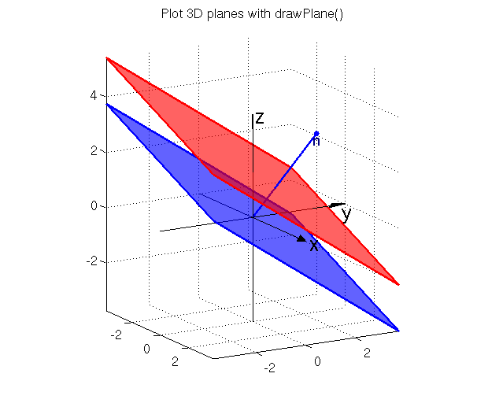
2D example: In 2D, a plane is a straight line.
n = [1 2]'; figure(1); clf; hold on; drawVector(n, {'n'}); % the normal drawPlane(n); % unshifted plane, comes through the origin drawPlane(n, 2, 'r'); % the plane shifted by "2" hold off; title('Plot 2D planes with drawPlane()')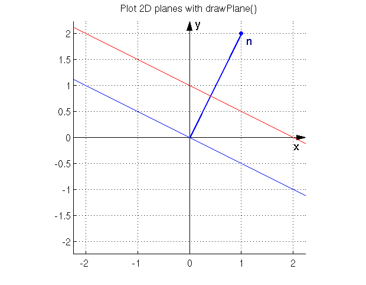
3. drawSpan
There is another possibility to specify a (hyper-)plane in an N-dimensional space: specify N-1 ND-vectors that will span the plane, i.e., vectors that lie in the plane. The drawSpan() routine visualizes planes in 2D and 3D defined in this way.
Example in 3D:
a = [1 2 3]'; b = [1 1 1]'; % Two 3D-vector figure(1);clf; hold on; drawVector([a b], {'a','b'}); drawSpan([a b], 'b') view(-40,5) hold off; title('Visualization of the span of two 3D vectors with drawSpan()')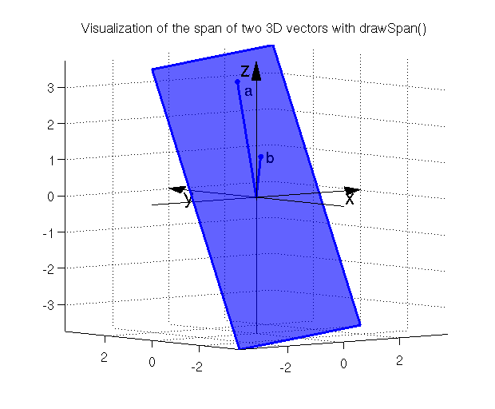
Note: A plane, defined as vectors span always contains the origin. To put it in mathematical terms, it is a linear subspace. If you'd like to shift the plane, you'll have to compute its normal and use the drawPlane() function:
n = cross(a,b); % The normal figure(1);hold on; drawVector(n, {'n'}, 'g.-'); drawPlane(n, 4, 'r') % Plot red plane view(-113,42) hold off; title('drawSpan vs. drawPlane()');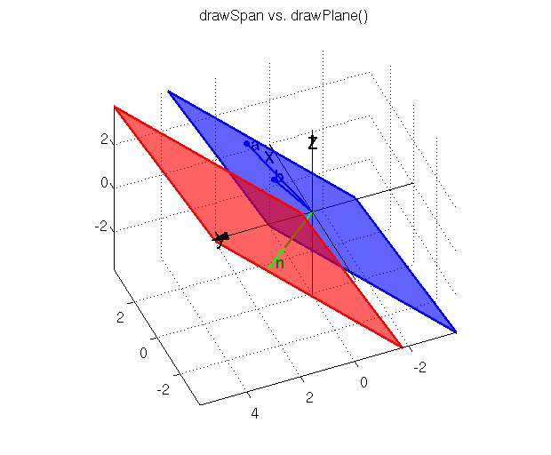
Example in 2D: A span in 2D is defined by a single 2D-vector:
a = [1 1];
figure(1); clf;
drawSpan(a);
title('drawSpan() in 2D')
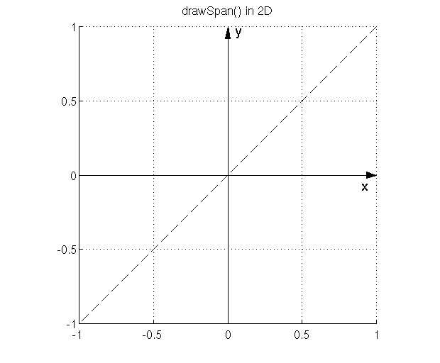 4. drawLine
As its name suggests, this function draws a line (2D or 3D) between two points (i.e., vectors). By default, the line type is dashed and its color is black but you can easily change it. Here is an example:
Example in 2D:
a = [2 1]'; b = [3 -2]'; % Two 2D-vectors figure(1);clf; hold on; drawVector([a b], {'a','b'}); % Plot the vectors drawLine([a b]); % Draw a line between them hold off; title('Draw a line between two vectors with drawLine()')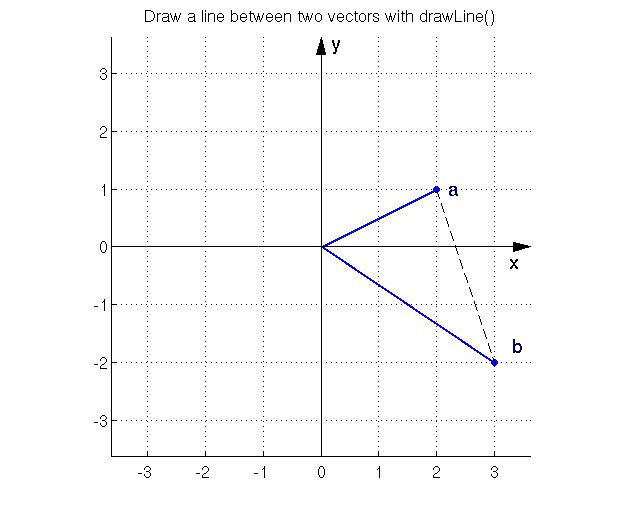
Change the line style (see help drawLine).
figure(1);clf; hold on; drawVector([a b], {'a','b'}); % Plot the vectors drawLine([a b], 'r2-.'); % Draw a line between them hold off; title('Example of a different line style')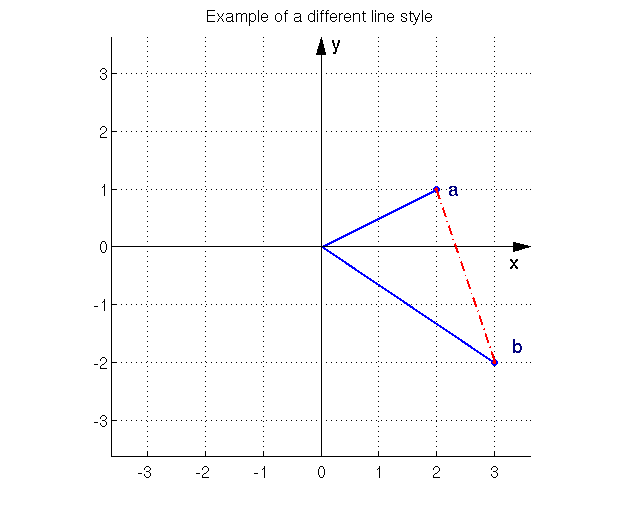
Example in 3D:
a = [1 2 3]'; b = [3 -1 2]'; % Two 3D-vectors figure(1);clf; hold on; drawVector([a b], {'a','b'}); % Plot the vectors drawLine([a b], 'r3'); % Draw a line between them view(15,5); hold off; title('Draw a line in 3D with drawLine()')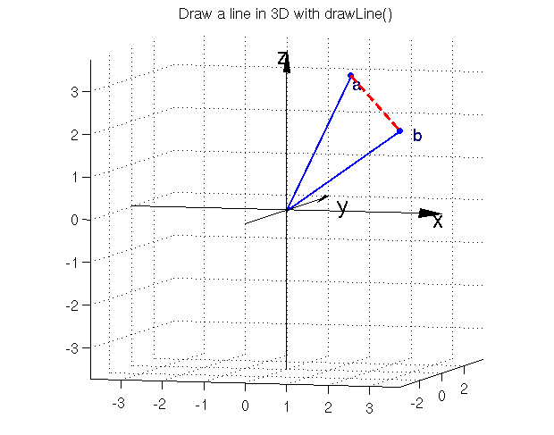
5. drawXLine and drawYLine
These commands draw a vertical/horizontal line in the xy plane at a given x/y value:
Vertical line:
figure(1); clf; drawVector([1 1]); drawXLine(1,'r'); title('Draw an x-line in the xy-plane')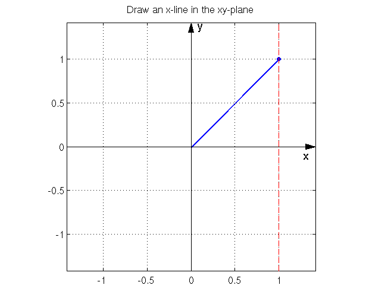
Horizontal line:
figure(1); clf; drawVector([1 1]); drawYLine(1,'r'); title('Draw an y-line in the xy-plane')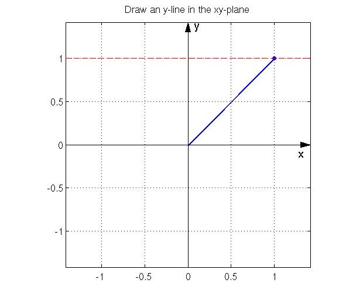
These commands work also in 3D:
figure(1); clf; drawVector([1 -1 2]/2); for x=-1:.2:1, drawXLine(x,'2r'); for y = -1:.2:1, drawYLine(y,'2r'); end, end title('drawXLine() and drawYLine() in 3D')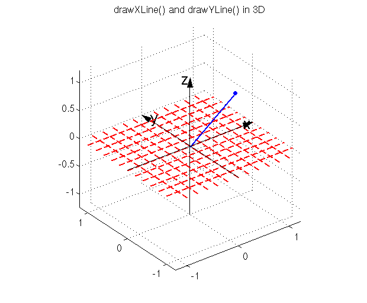
6. drawCircle
This command draws a circle or several circles in the xy-plane.
By default, it draws a black unit circle at the origin: drawCircle. The general usage is drawCircle(x,y,r,lineSpec), where x, y, and r are matrices of the center coordinates (x and y) and radii (r) of the circles; lineSpec is a string argument defining the line type.
The following examples illustrate the usage in 2D and 3D:
figure(1); clf; subplot(2,2,1); drawCircle; title('Draw a circle at the origin'); subplot(2,2,2); drawCircle(1,1,'rd'); title('or set another circle center'); subplot(2,2,3); drawCircle(rand(5,1), rand(5,1), rand(5,1)/3, '2r-'); title('Draw several circles at once') subplot(2,2,4); drawPlane([0 0 1]); drawCircle(rand(5,1)*2-1, rand(5,1)*2-1, rand(5,1)/2, '2g-'); title('Use of drawCircle() in 3D')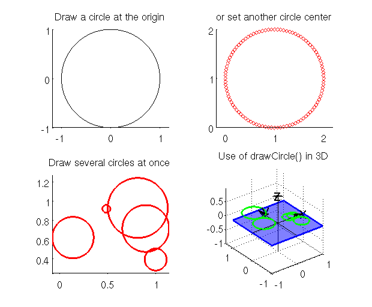
7. drawAxes
drawAxes() is a function that is probably never to use directly, but which is called by almost all other functions in the toolbox. It plots into the current figure the "xy" (2D) or "xyz" (3D) coordinate axes lines going through the origin. It takes two mandatory parameters: a dimension number, d = {2,3}, and a string defining the axes color.
Note: to put the arrows at the end of coordinate lines, drawAxes() makes use of a 3d party function "arrow.m" if it is available under the MATLAB search path. The "arrow.m" was written by Erik Johnson and can be downloaded from the MATLAB Central File Exchange: www.mathworks.com/matlabcentral/fileexchange/278.
Example in 3D:
load('queen.mat'); % load the vertex and face arrays figure(1); clf; drawMesh(vertex, face, 'wire'); % draw a 3D mesh drawAxes(3, 'g'); % Draw green axes view(60, 10) title('drasAxes: draw green coordinate axes through the origin');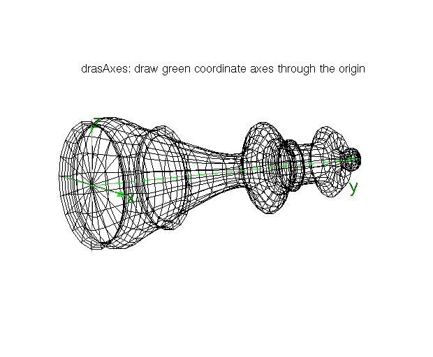
Sometimes you would like to have different axes labels instead of the standard "xyz". You can specify those by calling drawAxes with an additional (optional) parameter, a cell array of strings:
figure(1); clf; drawMesh(vertex, face, 'wire'); drawAxes(3, 'r', {'Axes 1','Axes 2','Axes 3'}); % Name axes view(60, 10) title('Different axes labeling');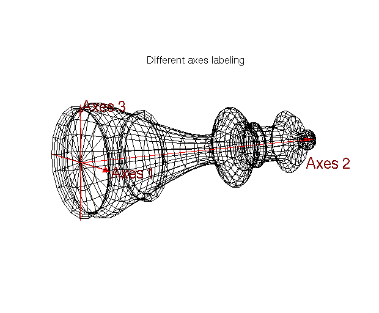
Example in 2D:
figure(1); clf; plot(exp(2*pi*1i*(1:20)/20), '.'); drawAxes(2, 'k', {'\alpha','\beta'}); title('Draw coordinate axes in 2D')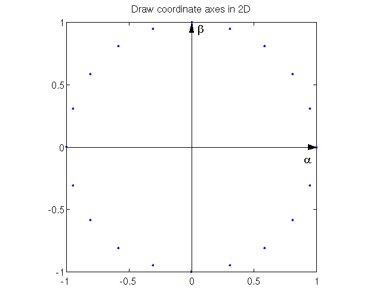
8. drawSphere
This comman plot the unit 2D or 3D sphere under a linear transformation. By default, it draws the unit 3D sphere:
figure(1); clf;
drawSphere
title('Draw the unit sphere with drawSphere()')
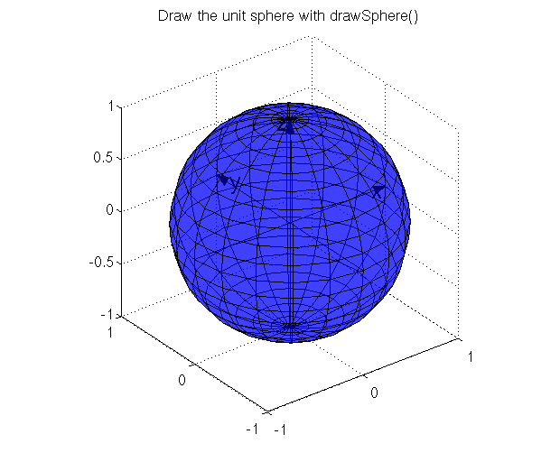 To plot the 2D sphere, which is a circle, specify a 2-by-2 transformation matrix, A. For the unit sphere, A should be the identity matrix:
clf; drawSphere(eye(2),[1 1])
title('Draw the 2D unit sphere');
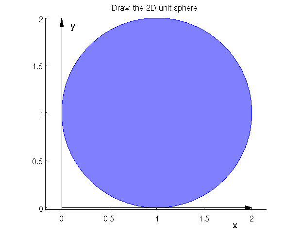 A linear transformation transforms the unit sphere into an ellipsoid. Here is an example in 2D:
clf; drawSphere([1 1; 0 -1], 'r'); title('Draw the 2D unit sphere under a linear transformation')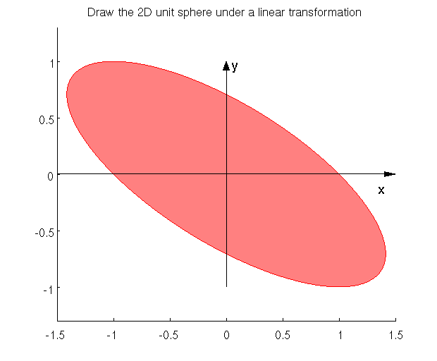
Example in 3D:
clf; drawSphere(magic(3),'g',.2); view([13 5]); title('Draw the 3D unit sphere under a linear transformation')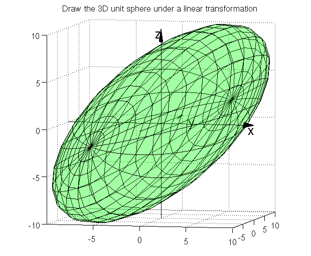
Note the optional parameters: 'g' and .2, which are the sphere color and the transparency value, respectively.
Actually, drawSphere allows to specify an affine transformation. That is, linear transformation + a shift. The shift vector is given as an additional (optional) input parameter:
clf; drawSphere(rand(2)*2); % linear transform hold on; drawSphere(rand(2), [1 1]/2, 'g'); % affine transform title('Linear and affine transforms of the unit sphere');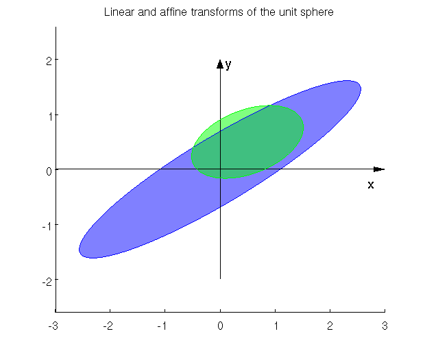
clf; drawSphere(rand(3)); % linear transformation hold on; drawSphere(rand(3), [1 0 1], 'g'); % affine transformation title('Linear and affine transforms of the unit sphere');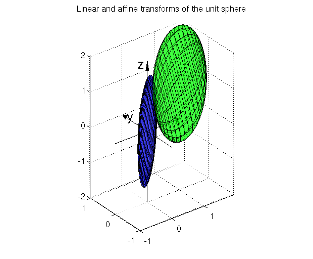
9. drawMesh
This function plots a 2D or 3D polygonal mesh. A "mesh" is defined by two arrays: V and F. The first one has the dimensions n-by-{2,3} and contains the 2D/3D coordinates of n "vertices". The second m-by-k array of "faces" defines the connectivity of the vertices: each of the m rows correspond to a face and contains the indices (i.e., positive integers) of the vertices incident with the face. Different faces can have different number of incident vertices, k is the maximum number of vertices among all the faces. The next examples clarify the issue:
Example 1: 2D mesh
load('home.mat'); % Load the vertex and face arrays figure(1); clf; drawMesh(vertex, face, 'wire'); % Plot the mesh axis on; grid on; axis([-.5 1.5 0 1.5]) title('Draw a 2D mesh with drawMesh()')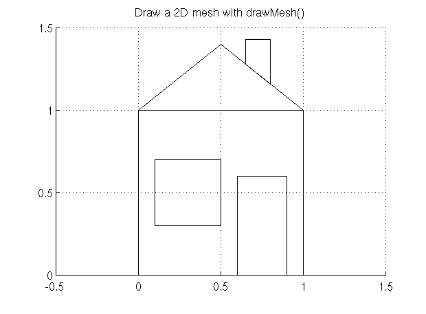
Example 2: 3D Surface plot
load('queen.mat'); % Load the vertex and face arrays figure(1); clf; drawMesh(vertex, face) % Plot the mesh view(20, 60) title('Draw a 3D mesh with drawMesh()')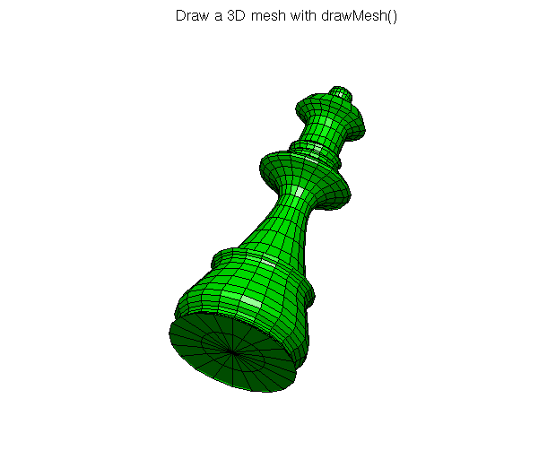
Of course, you are free to change the color of the mesh:
figure(1); clf; drawMesh(vertex, face, 'b') % Plot the mesh in blue color view(20, 60) title('Specify the mesh color');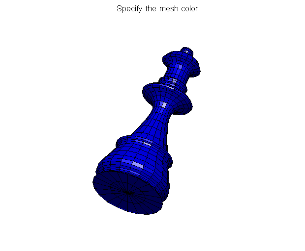
... and change its transparency:
figure(1); clf; drawMesh(vertex, face, 'b', .5) % Semitransparent mesh view(20, 60) title('Specify the mesh transparency')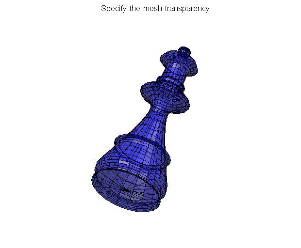
Example 3: 3D wire-frame plot
figure(1); clf; drawMesh(vertex, face, 'wire') % wire-frame plot view(20, 60) title('Wire-frame plot of a mesh')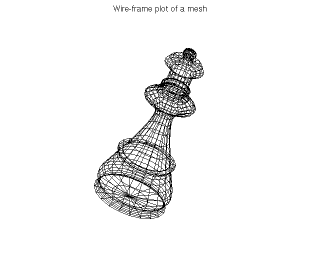
10. dispMEq
This function was written to enhance the MATLAB publishing capabilities by the possibility to include matrix equations in a published file. In its simplest form, dispMEq can be used to visualize a matrix. E.g., to visualize a random matrix, A, use:
figure(2); clf; dispMEq('A', rand(5));
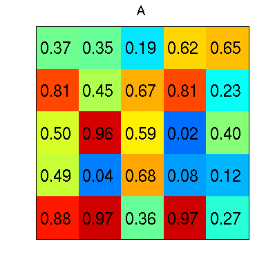 By default, the numbers are shown with 2 decimals after the comma. However, it is possible to specify a different numeric format with an option 'format':
A = rand(5); figure(2);clf; dispMEq('A', A, 'format', {'%1.1f'});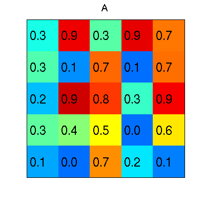
The following example shows how dispMEq can be used to visualize a proper matrix equation:
A = rand(5); [L,U] = lu(A);
figure(3); clf; dispMEq('A = L*U', A, L, U);
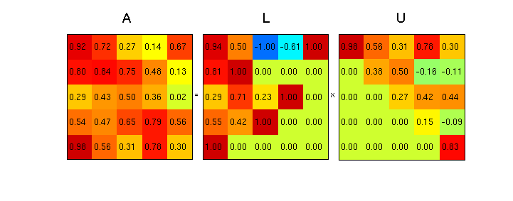 or:
A = randn(5,3); x=rand(3,1); figure(2); clf; dispMEq('A*x=b', A, x, A*x);
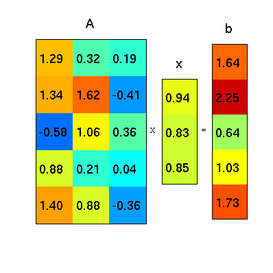 Beside the numeric format, dispMEq supports a kind of "symbolic" equations also. A symbolic representation is used automatically whenever the matrix elements are not numbers. Consider the following example:
A = nan(5); x = nan(5,1); b = nan(5,1);
figure(2);clf; dispMEq('A*x=b',A,x,b);
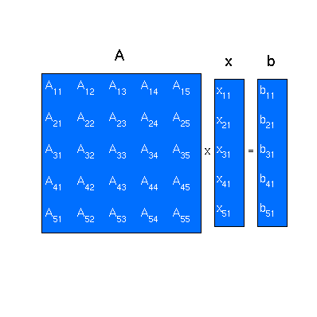 The default format in the symbolic mode is 'elems', meaning elementwise: each entry of a matrix is displayed as a symbol with appropriate subscript indices. However, there are two additional representation format options - 'rows' and 'cols' - which allow to group the elements accordingly. The following example illustrates the three possible symbolic representation forms:
A = nan(5); figure(3);clf; dispMEq('A;A;A',A,A,A,'format',{'elems','cols','rows'});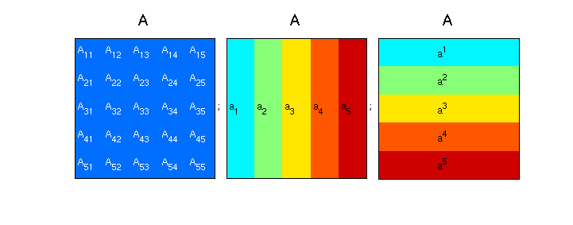
Ultimately, dispMEq allows to specify a custom text displayed in each matrix in the equation. This can be achieved by defining the matrix as a cell array of strings, as in the next example:
y = {'a^1\cdot x';
'a^2\cdot x';
'a^3\cdot x';
'a^4\cdot x' };
figure(2);clf; dispMEq('A*x=y',A,x,y,'format',{'rows', 'cols','rows'})
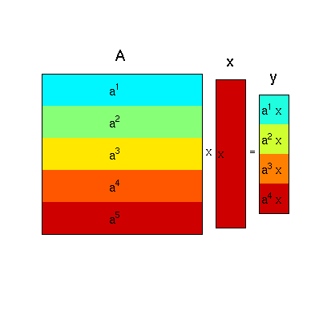 11. drawGraph
This is a toy function that plots a toy directed graph with up to 6 nodes, n, defined by its n-by-n adjacency matrix:
G = toeplitz([0 1 0 0 0 0], [0 0 0 0 0 1]) figure(1); clf; drawGraph(G);
G =
0 0 0 0 0 1
1 0 0 0 0 0
0 1 0 0 0 0
0 0 1 0 0 0
0 0 0 1 0 0
0 0 0 0 1 0
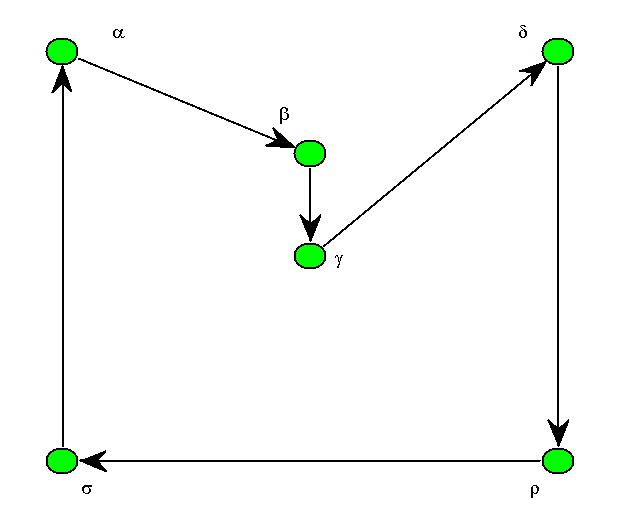
Comments or bugs?
The toolbox was written by Vladimir Bondarenko for the "Numerical algorithms" course to visualize the geometric ideas central to the methods of numerical linear algebra.
For comments, bugs and suggestions contact: Vladimir Bondarenko.